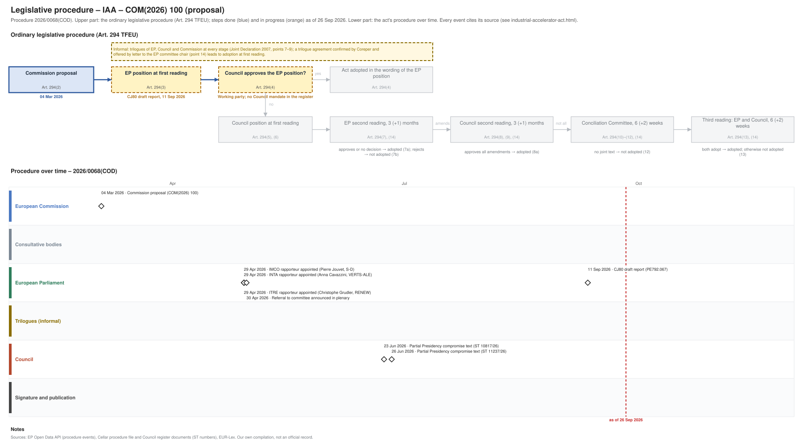

← All procedures · Regulation timeline
Procedure 2026/0068(COD), ongoing, as of 25 Sep 2026. Drawing: SVG · PNG · PDF (A3) · draw.io

| Date | Actor | Event | Document | Source |
|---|---|---|---|---|
| 2026-03-04 | European Commission | Commission proposal (Art. 294(2) TFEU) | COM(2026) 100 | Cellar (CELEX 52026PC0100) |
| 2026-04-29 | European Parliament | IMCO rapporteur appointed (Pierre Jouvet, S-D) | EP Open Data API, procedure 2026-0068 (participation RAPPORTEUR) | |
| 2026-04-29 | European Parliament | INTA rapporteur appointed (Anna Cavazzini, VERTS-ALE) | EP Open Data API, procedure 2026-0068 (participation RAPPORTEUR) | |
| 2026-04-29 | European Parliament | ITRE rapporteur appointed (Christophe Grudler, RENEW) | EP Open Data API, procedure 2026-0068 (participation RAPPORTEUR) | |
| 2026-04-30 | European Parliament | Referral to committee announced in plenary | EP Open Data API, procedure 2026-0068 (REFERRAL) | |
| 2026-06-23 | Council | Partial Presidency compromise text | ST 10817/26 | Cellar procedure file 2026/68 (Council register) |
| 2026-06-26 | Council | Partial Presidency compromise text | ST 11237/26 | Cellar procedure file 2026/68 (Council register) |
| 2026-09-11 | European Parliament | CJ80 draft report | PE792.067 | EP Open Data API, procedure 2026-0068 (COMMITTEE_TABLING_REPORT) |
| Date | Document | Kind | Subject |
|---|---|---|---|
| 2026-03-05 | ST 7009/26 | council-transmission | Proposal for a REGULATION OF THE EUROPEAN PARLIAMENT AND OF THE COUNCIL establishing a framework of measures for the acceleration of industrial capacity and … |
| 2026-03-05 | ST 7009/26 ADD 1 | council-transmission | ANNEX to the Proposal for a REGULATION OF THE EUROPEAN PARLIAMENT AND OF THE COUNCIL establishing a framework of measures for the acceleration of industrial … |
| 2026-03-05 | ST 7009/26 ADD 2 | council-transmission | REGULATORY SCRUTINY BOARD OPINION Impact Assessment accompanying the proposal for an Industrial Accelerator Act |
| 2026-03-05 | ST 7009/26 ADD 3 | council-transmission | COMMISSION STAFF WORKING DOCUMENT Subsidiarity Grid Accompanying the document Proposal for a REGULATION OF THE EUROPEAN PARLIAMENT AND OF THE COUNCIL … |
| 2026-03-05 | ST 7009/26 ADD 4 | council-transmission | COMMISSION STAFF WORKING DOCUMENT IMPACT ASSESSMENT REPORT Accompanying the document Proposal for a REGULATION OF THE EUROPEAN PARLIAMENT AND OF THE COUNCIL … |
| 2026-03-05 | ST 7009/26 ADD 5 | council-transmission | COMMISSION STAFF WORKING DOCUMENT EXECUTIVE SUMMARY OF THE IMPACT ASSESSMENT Accompanying the document Proposal for a REGULATION OF THE EUROPEAN PARLIAMENT AND … |
| 2026-03-11 | WK 3834/26 | council-note | Presidency flash note for the meeting of the Working Party on Competitiveness and Growth (Industry) on 16 March 2026 |
| 2026-03-16 | WK 4090/26 | council-note | Presentation by the European Commission : Proposal for a Regulation for Industrial Accelerator Act (agenda item 2) Working Party on Competitiveness and Growth … |
| 2026-03-16 | WK 4123/26 | council-note | Presentation by the European Commission : Proposal for a Regulation for Industrial Accelerator Act - Impact Assessment (agenda item 3) Working Party on … |
| 2026-03-20 | WK 4418/26 | council-note | Regulation for Industrial Accelerator Act: - General comments and questions by : AT, BE, CZ, DE, DK, EE, ES, FI, FR, HU, IE, LT, MT, NL, PL, SE, SI |
| 2026-03-24 | WK 4405/26 | council-note | Presentation by the European Commission : Proposal for a REGULATION OF THE EUROPEAN PARLIAMENT AND OF THE COUNCIL establishing a framework of measures for the … |
| 2026-03-30 | WK 4861/26 | council-note | Presidency flash note for the meeting of the Working Party on Competitiveness and Growth (Industry) on 16 April 2026 |
| 2026-04-24 | WK 5907/26 | council-note | Presidency flash note for the meeting of the Working Party on Competitiveness and Growth (Industry) on 27 and 28 April 2026 |
| 2026-05-11 | WK 6637/26 | council-note | Presentations by the European Commission : New European Bauhaus: from vision to implementation (agenda item 2) Working Party on Competitiveness and Growth … |
| 2026-05-13 | ST 9116/26 REV 1 | council-note | Preparation of the Competitiveness Council (Internal Market, Industry, Research and Space) on 28 May 2026 Industrial Accelerator Act: how best to leverage … |
| 2026-05-19 | WK 6968/26 | council-note | Regulation for Industrial Accelerator Act - European Commission replies to MS questions : Chapters I, II |
| 2026-05-19 | WK 6969/26 | council-note | Regulation for Industrial Accelerator Act - European Commission replies to MS questions : Chapter V |
| 2026-05-19 | WK 6970/26 | council-note | Regulation for Industrial Accelerator Act - Technical note on permitting provisions in relevant European legislations |
| 2026-06-01 | WK 7745/26 | council-note | Regulation for Industrial Accelerator Act - European Commission replies to MS questions : Chapter IV |
| 2026-06-10 | WK 8240/26 | council-note | Regulation for Industrial Accelerator Act - European Commission replies to MS questions : Chapter III |
| 2026-06-23 | ST 10817/26 | council-compromise | Partial Presidency compromise text |
| 2026-06-23 | WK 7976/26 ADD 1 | council-note | Regulation for Industrial Accelerator Act - annexes: - General comments and questions by : AT, CZ, DE, EL, FI, FR, IT, IT, MT, SE, SI |
| 2026-06-26 | ST 11237/26 | council-compromise | Partial Presidency compromise text |
| 2026-06-26 | WK 9477/26 | council-note | Regulation for Industrial Accelerator Act: - General comments and questions on Chapter IV by : BE, CZ, DE, DK, EE, EL, FI, FR, IT, LT, LU, MT, NL, PL, PT, SE, … |
| 2026-06-29 | WK 9477/26 COR 1 | council-note | Regulation for Industrial Accelerator Act: - General comments and questions on Chapter IV by : BE, CZ, DE, DK, EE, EL, ES, FI, FR, IT, LT, LU, MT, NL, PL, PT, … |
| 2026-07-02 | WK 9871/26 | council-note | Regulation for Industrial Accelerator Act: - General comments and questions on Chapter III by : AT, BE, CZ, DE, EE, DE, DK, EL, FI, FR, IT, LT, MT, NL, PL, PT, … |
| 2026-07-08 | ST 11374/26 | council-note | Guidance for further work |
| 2026-07-30 | WK 11081/26 | council-note | Industrial Accelerator Act - Union Origin Options Paper |
| 2026-09-11 | PE792.067 | ep-draft-report | DRAFT REPORT on the proposal for a regulation of the European Parliament and of the Council establishing a framework of measures for the acceleration of … |
{kind=link}
{kind=link}